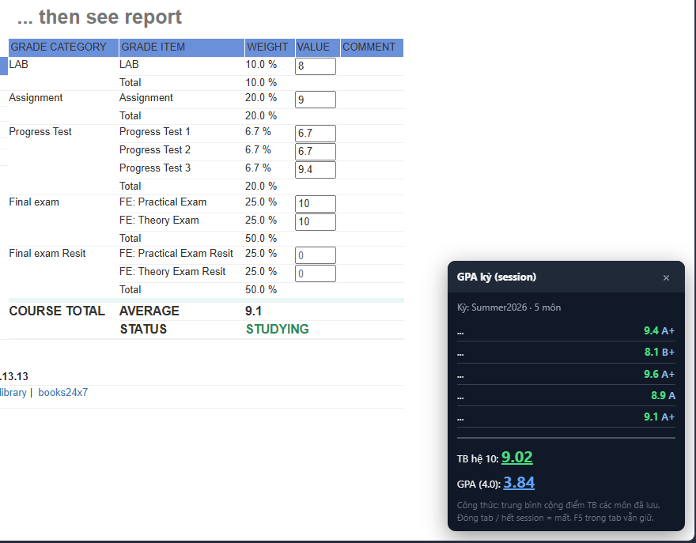

Userscript cho trình duyệt: gõ thử điểm vào cột Value trên
StudentGrade.aspx, tự tính Average theo trọng số,
xử lý Resit, và gom TB các môn trong session thành GPA.
Không gửi dữ liệu ra ngoài — chỉ chạy trên máy bạn.

Ô trống thành input. Điểm đã có trên FAP được giữ. Reload trang chi tiết có thể khôi phục từ session tab.
Average = Σ(value × weight / 100). Có điểm thi lại → bỏ lần 1 cùng loại (Practical / Theory…).
Lưu TB từng môn trong tab → trang tổng quát hiện TB hệ 10 và GPA thang 4.0. Đóng tab = mất.
Bản đầy đủ: 1 môn + resit + GPA kỳ.
Không cần cài extension. Mở trang điểm một môn, F12 → Console → dán script → Enter.
Đang tải script…
Hoặc tải lệnh gọn (fetch rồi eval — cần online):
Resit có điểm → dùng resit, không cộng lần 1 cùng base name. GPA kỳ: trung bình cộng TB các môn đã lưu; GPA 4.0 quy đổi thang FPT (A+→4.0 … D→1.0).
Xem / copy trực tiếp userscript đầy đủ và bản MVP.
Đang tải…
Đang tải…